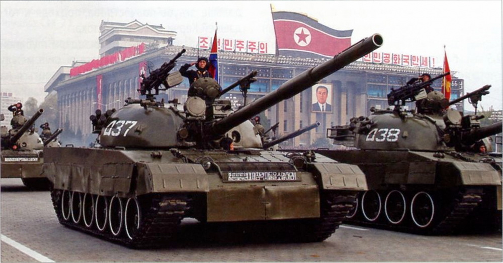
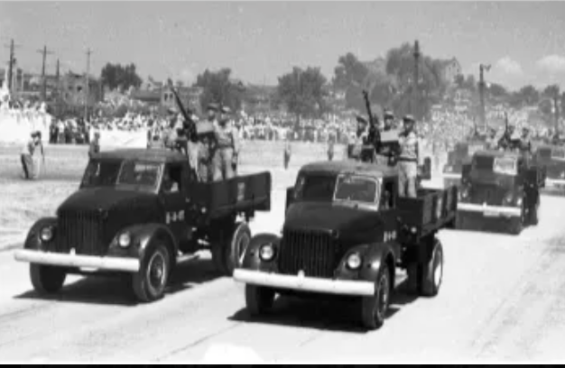

North Korean Armoured Vehicles

This table includes every known North Korean armoured vehicle
Index:
Note: Many vehicles do not have confirmed official names. North Korea appears to use two naming schemes. The first are standard short names, such as Ch'ŏnma-92 [천마-92]. The others are longer descriptors, that may take the place of short names for imported vehicles. For example, the Ch'ŏnma-92 is also named '1992-model heavy tank Ch'ŏnma-92', and the PT-76's only confirmed name is '1976-model amphibious light tank'. Few of these names are confirmed, but I have extrapolated names for other vehicles where their short names are also known. These speculative names are marked with *.
Medium Tanks / MBTs
| Image | Official Korean Name | Other Name(s) | Origin | Development Stage (No. produced) | Details | ||||
|---|---|---|---|---|---|---|---|---|---|
 |
Unknown | T-34-76 (1942) [Т-34-76 обр. 1942 г.] |
USSR | — | 'Mickey-mouse' turret, 76mm cannon | ||||
 |
Unknown | T-34-76 (1943) [Т-34-76 обр. 1943 г.] |
USSR | — | 'Mickey-mouse' turret with distinct cupola, 76mm cannon |
||||
| Unknown | T-34-85 [Т-34-85] |
USSR | — | Base T-34-85 with some domestic upgrades | |||||
 |
Unknown | T-54 obr. 1949 [Т-54 обр. 1949 г.] |
USSR | — | Details.. | ||||
 |
Unknown | T-54 obr. 1951 [Т-54 обр. 1951 г.] |
USSR | — | Details.. | ||||
 |
Unknown | T-55 obr. 1958 [Т-55 обр. 1958 г.] |
USSR | — | Details.. | ||||
| Unknown | T-55A [Т-55А] |
USSR | — | Details.. | |||||
 |
Unknown | Type 59 [59式] |
China | — | Details.. | ||||
.png) |
Unknown |
|
DPRK | ? | Details.. | ||||
| 1968-model heavy tank 1968년식 중땅크 |
68 / Type 68 [1] | DPRK | Production (~x) | Details.. | |||||
 |
Unknown |
|
USSR | — | This tank was likely sent to the DPRK by Iran, who themselves captured it from Iraq in the Iran-Iraq War, in the mid-to-late 1980s. | ||||
 |
Ch'ŏnma ≪천마≫ 1976-model heavy tank Ch'ŏnma 1976년식 중땅크 ≪천마≫ |
Ch'onma-ho I Chonma-Ho Ga Ch'ŏnma-1976 [2] ≪천마-1976≫ |
DPRK | Production (~x) | Details.. | ||||
| Ch'ŏnma ≪천마≫ 1976-model heavy tank Ch'ŏnma [3] 1976년식 중땅크 ≪천마≫ |
Ch'onma-ho I Chonma-Ho Ga Ch'onma (1986) 1986년식 중땅크 ≪천마≫ |
DPRK | Production () | Details.. | |||||
| Ch'ŏnma ≪천마≫ 1976-model heavy tank Ch'ŏnma 1976년식 중땅크 ≪천마≫ |
Ch'onma-ho II Ch'onma-Ho Na Ch'onma (1985) Ch'ŏnma-1985 [4] 1985년식 중땅크 ≪천마≫[3] ≪천마-1985≫ |
DPRK | Production () | Details.. | |||||
| Ch'ŏnma-92 [5] ≪천마-92≫ 1992-model heavy tank Ch'ŏnma-92 1992년식 중땅크 ≪천마-92≫ |
Ch'onma-ho III Ch'onma-Ho Da M1992 |
DPRK | Prototype () | Details.. | |||||
 |
Ch'ŏnma-92 ≪천마-92≫ 1992-model heavy tank Ch'ŏnma-92 1992년식 중땅크 ≪천마-92≫ |
Ch'onma-ho III Ch'onma-Ho Da M1992 |
DPRK | Production () | Details.. | ||||
.jpeg) |
Unknown |
|
DPRK | Prototype () | Details.. | ||||
.jpeg) |
Unknown | Ch'ŏnma-92 (125mm) | DPRK | Prototype (Unknown, ~1) | Likely one-off prototype, seen very rarely. It has been theorised to be a testbed for a 125mm cannon, given the thermal sleeve. This is not confirmed. | ||||
|
Ch'onma-ho IV | DPRK | Prototype (Unknown, ~1) | Details.. | |||||
|
Ch'onma-ho IV Ch'onma-ho V Ch'onma-ho Ra |
DPRK | Production (~x) | Details.. | |||||
|
M2002 Ch'onma-ho V Ch'onma-ho VI Ch'onma-ho Ra P'okp'ung-ho I |
DPRK | Pre-production (~) | Details.. | |||||
|
M2002 Ch'onma-ho V Ch'onma-ho VI Ch'onma-ho Ra P'okp'ung-ho I P'okp'ung-ho II Ch'onma-ho 216 |
DPRK | Production (~) | Details.. | |||||
.jpeg) |
|
P'okp'ung-ho I P'okp'ung-ho III Ch'onma-ho 216 (2013) |
DPRK | Production (~) | Details.. | ||||
.jpeg) |
|
P'okp'ung-ho I P'okp'ung-ho IV Ch'onma-ho 216 (2017) |
DPRK | Production (~) | Details.. | ||||
|  |
|
M2009 Songun-ho Son'gun-ho 915 |
DPRK | Production (~) | Details.. | ||||
 (museum).png) |
|
Songun-ho II Son'gun-ho 915 (2012) |
DPRK | Prototype (1 seen) | Details.. | ||||
.jpg) |
|
Songun-ho II Son'gun-ho 915 (2012) |
DPRK | Production (~) | Details.. | ||||
.jpg) |
|
Songun-ho II Son'gun-ho 915 (2018) |
DPRK | Production (~) | Details.. | ||||
|
Ch'onma-2 [8] Ch'onma-ho 2 M2020 |
DPRK | Prototype/Pre-Production (~9) | Details.. | |||||
.png) |
|
Ch'onma-2 [8] Ch'onma-ho 2 M2023 |
DPRK | Prototype/Pre-Production (~9) | Details.. | ||||
.png) |
|
Ch'onma-ho 20 Tianma-2 [9] M2024 |
DPRK | Unknown | Details.. | ||||
.png) |
|
Ch'onma-ho 20 Tianma-2 [9] M2025 |
DPRK | Unknown | Details.. |
[1] This name is mentioned in a series of articles on Jajusibo, by an unknown author. Although there is a large amount of valuable (and seemingly correct) information in them, there are also mistakes and heavy amounts of propaganda. It is more likely that the T-54/55 (and its domestically-upgraded/produced variants) does not have a unique designator
[2] This name is mentioned in a series of articles on Jajusibo, by an unknown author. Although there is a large amount of valuable (and seemingly correct) information, there are also mistakes and heavy amounts of propaganda. This name contradicts more reputable sources.
[3] These two vehicles likely did not receive different designations, although possibly could be referred to as "1986-model.." and "1985-model..."
[4] Tentative name, if 'Ch'ŏnma-1976' is a real designation. It is entirely possible (and likely) that this variant didn't receive a new name, however (and that Ch'ŏnma-1976 is wrong).
[5] Ch'ŏnma-92 is the confirmed name for the vehicle one row below. It is unknown if this vehicle shares the same names, however, given the high similarities (differing externally only in ERA layout), it seems highly likely.
[6] The Ch'ŏnma-98 breaks from the trend of vehicles named after their year of production, as it was supposedly produced in Chuch'e 89 (2000). However, unlike the Ch'ŏnma-214, -215, and -216 which are named based on key dates (216 being Kim Jong Il's birthday (1941/2/16)), 98 doesn't appear to refer to anything in particular. It is possible that the name was spelled incorrectly in the article naming it — with the real name being Ch'ŏnma-89. Alternatively, if 98 refers to the year 1998, then it could be Chuch'e 87 (however, it would be odd to use both Gregorian and Chuch'e years in the same name).
[7] This speculative name presumes a few things. Firstly, the Chuch'e calendar officially stopped being used in 2024. This name assumes that they used 2020 instead of Chuch'e 109, although it is plausible it was used initially and then changed after 2024. Secondly, the Ch'ŏnma-20 has been referred to as a main battle tank, instead of a 'heavy tank' as all MBTs prior have been. This could signal a name shift, but might also just be used interchangeably, as doctrine-wise, their 'heavy tanks' are still MBTs. Thirdly, it assumes this naming scheme in general continues to be used.
[8] It was, and still is, widely believed that these vehicles are known as Ch'ŏnma-2. However, after the release of the name Ch'ŏnma-20 for the upgraded variant, it is very possible that the Ch'ŏnma-2 name shown on a sign in 2024 was misread, and in fact, always said Ch'ŏnma-20.
[9] Tianma (天馬) is the Chinese word for the Korean Ch'ŏnma (천마). These mean the same thing (Pegasus). At least one news article mistranslated it, presumably from Chinese, and it then spread quickly online.
Heavy Tanks
| Image | Official Korean Name | Other Name(s) | Origin | Development Stage (No. produced) | Details | ||
|---|---|---|---|---|---|---|---|
| Unknown |
|
USSR | Possibly 12 | It is unknown if North Korea officially used the IS-2. Some sources say 12 IS-2s were delivered by the USSR. China used IS-2s during the Korean War, and some may have fallen into North Korean hands. At least one IS-2 is on display in a North Korean museum |
Light Tanks
| Image | Official Korean Name | Other Name(s) | Origin | Development Stage (No. produced) | Details | ||
|---|---|---|---|---|---|---|---|
| 1967-model amphibious light tank 1967년식 수륙땅크 |
PT-76B [ПТ-76Б] Sinhŭng-67 [1] ≪신흥-67≫ |
USSR | Unknown | Details | |||
 |
Unknown | Type 62 [62式] |
China | Details | |||
| Unknown | Type 63 [63式] |
China | Details | ||||
.jpeg) |
Unknown |
|
DPRK | Details | |||
| Sinhŭng ≪신흥≫ 1981-model light tank Sinhŭng 1981년식 경땅크 ≪신흥≫ |
Sinhung (1985) M1981 M1985 Type 82 PT-85 Sinhŭng-81 [2] ≪신흥-81≫ |
DPRK | Details | ||||
.jpeg) |
Sinhŭng ≪신흥≫ 1981-model light tank Sinhŭng 1981년식 경땅크 ≪신흥≫ |
Sinhung (1992) M1981 M1985 Type 82 PT-85 Sinhŭng-81 [2] ≪신흥-81≫ |
DPRK | Details | |||
.jpg) |
Sinhŭng ≪신흥≫ 1981-model light tank Sinhŭng 1981년식 경땅크 ≪신흥≫ |
Sinhung (2016) M1981 M1985 Type 82 PT-85 Sinhŭng-81 [2] ≪신흥-81≫ |
DPRK | Details |
[1] This name is mentioned in a series of articles on Jajusibo, by an unknown author. Although there is a large amount of valuable (and seemingly correct) information in them, there are also mistakes and heavy amounts of propaganda. The PT-76 does not appear to have had its name revealed.
[2] This name is mentioned in a series of articles on Jajusibo, by an unknown author. Although there is a large amount of valuable (and seemingly correct) information in them, there are also mistakes and heavy amounts of propaganda. The vehicle is just known as Sinhŭng (in turn also disproving the above Sinhŭng-67 for the PT-76).
APCs / IFVs
| Image | Official Korean Name | Other Name(s) | Origin | Development Stage (No. produced) | Details |
|---|---|---|---|---|---|
| Unknown | BA-64 [БА-64] |
USSR | — | Details | |
| Unknown | BTR-40 [БТР-40] |
USSR | — | Details | |
| 69 1969-model armoured personnel carrier 69 1969년식 장갑차 ≪69≫ |
BTR-60PB [БТР-60ПБ] |
USSR | Imported / Locally-assembled | Details | |
| Unknown | BTR-80A [БТР-80А] |
USSR | — | Details | |
 |
Unknown | Type 63 ≪63式≫ |
China | — | Details |
| 323 1973-model armoured personnel carrier 323 1973년식 장갑차 ≪323≫ |
VTT-323 | China | — | Details | |
.png) |
323 1973-model armoured personnel carrier 323 1973년식 장갑차 ≪323≫ |
VTT-323 323 (1992) |
DPRK | — | Details |
| Chunma-D ≪준마-ㄹ≫ Chuch'e 98-model armoured personnel carrier Chunma-D 1973년식 장갑차 ≪준마-ㄹ≫ |
M2009 |
DPRK | — | Details | |
 |
Unknown | M2010 6x6 Chunma-D [1] Jongma [2] |
DPRK | — | Details |
| Unknown | M2010 8x8 M2010-I 8x8 Chunma-D [1] Jongma [2] |
DPRK | — | Details | |
| Unknown | M2010 8x8 M2010-II 8x8 Chunma-D [1] Jongma [2] |
DPRK | — | Details |
[1] The name Chunma-D has occasionally been incorrectly applied to all three variants of the M2010 APC. It should only refer to the tracked APC.
[2] Jongma appears to be a translation error, stemming from a Chinese source referring to the 6x6 APC as 'Stallion', which is likely to be a rough translation of Chunma, which, as seen above, is incorrect for this vehicle.
Tank Destroyers / SPGs / FSVs
| Image | Official Korean Name | Other Name(s) | Origin | Development Stage (No. produced) | Details |
|---|---|---|---|---|---|
| Unknown | SU-76 [СУ-76] |
USSR | — | Details | |
| Unknown | SU-100 [СУ-100] |
USSR | — | Details | |
| Unknown | ISU-122 [ИСУ-122] |
USSR | — | Details | |
.png) |
Unknown | 323 (76mm) | DPRK | — | Details |
.png) |
1974-model 100mm self-propelled direct-fire gun ? [1] 1974년식 100mm 자행직사포 ≪?≫ [2] |
323 (100mm) | DPRK | — | Details |
.jpeg) |
1972-model 103mm self-propelled direct-fire gun ? [1] 1972년식 103mm 자행직사포 ≪?≫ [2] |
323 (103mm) | DPRK | — | Details |
 M1977.jpg) |
1976-model 122mm self-propelled level-fire gun ? [3] 1976년식 122mm 자행평사포 ≪?≫ [1] |
323 (122mm) M1977 |
DPRK | — | Details |
 M1985.jpeg) |
Unknown | 323 (122mm) M1985 |
DPRK | — | Details |
 M1985 (MANPADS).png) |
Unknown | 323 (122mm) (MANPADS) M1985 |
DPRK | — | Details |
.png) |
Unknown | Tokchon (100mm) M1972 |
DPRK | — | Details |
 (MANPADS).png) |
Unknown | Tokchon (100mm) (MANPADS) M1972 |
DPRK | — | Details |
 (LRF).png) |
Unknown | Tokchon (100mm) (LRF) M1972 |
DPRK | — | Details |
.jpg) |
1978-model 122mm self-propelled howitzer ? 1978년식 122mm 자행곡사포 ≪?≫ [4] |
Tokchon (122mm) M1981 |
DPRK | — | Details |
 (MANPADS).png) |
Unknown | Tokchon (122mm) (MANPADS) M1981 |
DPRK | — | Details |
.png) |
Unknown | Tokchon (130mm) M1975 |
DPRK | — | Details |
 2.jpg) |
Unknown | Tokchon (130mm) M1975 |
DPRK | — | Details |
 |
1974-model 130mm self-propelled level-fire gun ? 1974년식 130mm 자행평사포 ≪?≫ [4] |
Tokchon (130mm) M1991 M1992 |
DPRK | — | Details |
.png) |
Unknown | Tokchon (130mm) M1991 M1992 |
DPRK | — | Details |
 |
1972-model 152mm self-propelled howitzer ? 1972년식 152mm 자행곡사포 ≪?≫ [4] |
Tokchon (152mm) M1974 |
DPRK | — | Details |
 M1991.jpeg) |
Unknown | Tokchon (152mm) M1991 |
DPRK | — | Details |
 |
Unknown | "Rubber duck" | DPRK | — | Details |
 |
Unknown | — | DPRK | — | Details |
 |
Unknown | — | DPRK | — | Details |
 |
Unknown | — | DPRK | — | Details |
 |
Unknown | M1991 Chuch'ep'o [5] |
DPRK | — | Details |
.jpg) |
Unknown | M1991 (MANPADS) Chuch'ep'o [5] |
DPRK | — | Details |
 |
Unknown | M1992 Chuch'ep'o [5] |
DPRK | — | Details |
 |
Chuch'e 107-model 155mm self-propelled-type howitzer 주체107년식 155mm 자행형곡사포 ≪?≫ [6] |
M2018 | DPRK | — | Details |
 |
Chuch'e 107-model 155mm self-propelled-type howitzer 주체107년식 155mm 자행형곡사포 ≪?≫ [6] |
M2018 | DPRK | — | Details |
 |
Chuch'ep'o ≪주체포≫ 1973-model 170mm self-propelled howitzer Chuch'ep'o 1973년식 170mm 자행평사포 ≪주체포≫ |
Koksan M1978 |
DPRK | — | Details |
 |
Chuch'ep'o ≪주체포≫ 1983-model 170mm self-propelled howitzer Chuch'ep'o 1983년식 170mm 자행평사포 ≪주체포≫ |
Koksan M1989 |
DPRK | — | Details |
 |
Unknown | M1984 | DPRK | — | Details |
 |
Unknown | M2020 122mm FSV | DPRK | — | Details |
 |
Unknown | M2025 122mm FSV | DPRK | — | Details |
 |
1976-model 82mm self-propelled mortar 1976년식 82mm 자행박격포 |
M1985 | DPRK | — | Details |
 |
1978-model 120mm self-propelled mortar 1978년식 120mm 자행박격포 |
— | DPRK | — | Details |
 |
1981-model 140mm self-propelled mortar 1981년식 140mm 자행박격포 |
M1992 | DPRK | — | Details |
 |
Unknown | M2025 | DPRK | — | Details |
[1] "Direct-fire gun" is a literal translation. Assault gun would be a more accurate one.
[2] The short name for the 323-based SPGs is unknown. It is possible that they are also just referred to as 323, i.e. 1974년식 100mm 자행직사포 ≪323≫, but this is speculative. It is also possible they do not have a shorter name.
[3] "Level-fire gun" refers to the range at which these vehicles are expected to be used. It appears that "level-firing" guns are intended to be used at either long ranges (like the Chuch'ep'o, the longest-range artillery piece in North Korea's arsenal) or for some direct-fire use (and unlike the "direct-fire" guns, like the 100mm-armed ATS-59-based SPG (M1974), aren't intended for anti-tank use). This contrasts with the "curved-fire" guns, like the 152mm-armed ATS-59-based SPG (M1974), which are presumably intended for shorter-range (but not direct fire) engagements.
[4] The short name for the ATS-59-based SPGs is unknown. The name Tŏkch'ŏn [덕천] or Tŏkch'ŏnp'o [덕천포] (Tŏkch'ŏn gun/artillery) is frequently ascribed to these vehicles, but appears to not be official, and instead based on where they were spotted being constructed. It is also possible they do not have a shorter name.
[5] The name Chuch'ep'o is commonly used to refer to this class of turreted SPGs. However, this may not be official, and based on confusion with the 'Koksan' series, which are confirmed to be called the Chuch'ep'o.
[6] The short name for this SPG, if it has one, is unknown. It is sometimes referred to as Chuch'e 107, however, this just means 2018.
ATGM Carriers
| Image | Official Korean Name | Other Name(s) | Origin | Development Stage (No. produced) | Details |
|---|---|---|---|---|---|
| Unknown | 2P26 [2П26] |
USSR | — | Details | |
| Unknown | 2P27 [2П27] |
USSR | — | Details | |
.jpeg) |
Unknown | 323 (Bulsae-1) | DPRK | — | Details |
.jpeg) |
Unknown | Tŏkch'ŏn (Bulsae-1) | DPRK | — | Details |
.jpeg) |
Unknown | M1992 (Bulsae-2) | DPRK | — | Details |
.png) |
Unknown | UAZ-469 (Bulsae-4M) | DPRK | — | Details |
 |
Unknown | M2018 6x6 ATGM carrier Jongma [1] |
DPRK | — | Details |
 |
Unknown | M2020 8x8 (Bulsae-5) | DPRK | — | Details |
 |
Unknown | M2022 4x4 ATGM carrier | DPRK | — | Details |
 |
Unknown | M2024 8x8 ATGM carrier | DPRK | — | Details |
 |
Unknown | M2025 4x4 ATGM carrier | DPRK | — | Details |
[1] Jongma appears to be a translation error, stemming from a Chinese source referring to the 6x6 APC as 'Stallion', which is likely to be a rough translation of Chunma. The name Chunma-D has occasionally been incorrectly used for the M2010 APC, upon which this vehicle is based. The name Chunma-D only refers to the tracked APC.
SPAA / SHORAD
| Image | Official Korean Name | Other Name(s) | Origin | Development Stage (No. produced) | Details |
|---|---|---|---|---|---|
.jpeg) |
Unknown | GAZ-AA (12.7mm) [ГАЗ-АА (12,7-мм)] | DPRK | — | Soviet GAZ-AA trucks fitted with a single 12.7mm DShK [ДШК]. Seen in the 1948 parade. |
|  | Unknown | GAZ-51 [ГАЗ-51] | DPRK | — | Soviet GAZ-51 trucks fitted with either a 12.7mm DShK [ДШК] or 14.5mm KPV [КПВ]. Seen in the 1953 parade. |
.jpg) |
Unknown | ZiL-131 (14.5mm) ЗиЛ-131 (14,5-мм) |
DPRK | — | Details |
.png) |
Unknown | SR 131 (14.5mm) | DPRK | — | Details |
.png) |
Unknown | 323 (14.5mm) | DPRK | — | Details |
 M1983.png) |
Unknown | 323 (14.5mm) M1983 |
DPRK | — | Uparmoured 323 with ZPU-4 |
 M1978.png) |
Unknown | Tokchon (37mm) M1978 K-37-2 |
DPRK | — | Details |
 (MANPADS) M1978.png) |
Unknown | Tokchon (37mm) (MANPADS) M1978 K-37-2 |
DPRK | — | Details |
| Unknown | M1985 K-57-2 |
DPRK | — | Details | |
.png) |
Unknown | M1985 (MANPADS) K-57-2 |
DPRK | — | Details |
| Unknown | ZSU-23-4 "Shilka" [ЗСУ-23-4 «Шилка»] | DPRK | — | Details | |
 |
30mm twin-barrelled automatic anti-aircraft gun 30mm 쌍신자행자동고사포砲 |
M1989 M1992 K-30-2 |
DPRK | — | Details |
| Unknown | M1994 | DPRK | — | An upgraded design on the same chassis as the 'M1989', but armed with a six-barrelled 30mm rotary gun, MANPADS, and significantly improved radar. No public images are known to exist, although it has certainly been produced, even if in only limited numbers. | |
.png) |
Unknown | 323 (MANPADS) | DPRK | — | Details |
.png) |
Unknown | M1992 (MANPADS) | DPRK | — | Details |
| 1976-model self-propelled Hwasŭngch'ong Type 10 [1] 1976년식 자행화승총 10형 |
Strela-10 [Стрела-10] Pŏngae-3 [2] |
USSR | — | Details | |
| Unknown | Pŏngae-3 [2] | DPRK | — | Details | |
 |
Unknown | M2020 | DPRK | — | A short-range SAM system first revealed in 2020. It features a turret similar to the Russian Tor / Chinese HQ-17. At least one example was delivered to Russia, and subsequently destroyed. |
| Unknown | Pantsir [Панцирь] |
Russia | — | At least one Pantsir (unknown variant) was reportedly transferred to North Korea by Russia, sometime from November 2024. It is likely that it was used for the development of the 'Pantsir-NK'. No images are available. | |
 |
Unknown | Pantsir-NK | DPRK | — | A domestic tracked variant of the Pantsir, first shown in 2025. Features a modified Pantsir turret, but without the 30mm cannons. |
[1] Hwasŭngch'ong is the name given to all North Korean MANPADS.
[2] The name Pŏngae-3 is commonly given to the Strela-10 (and its domestic variant), but this name actually appears to refer to the S-125.
MLRSs
| Image | Official Korean Name | Other Name(s) | Origin | Development Stage (No. produced) | Details |
|---|---|---|---|---|---|
| Unknown | USSR | — | Details |